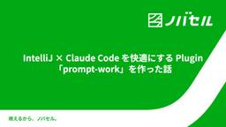
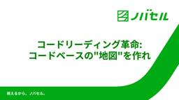
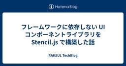
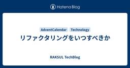
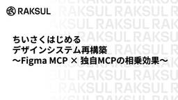
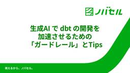
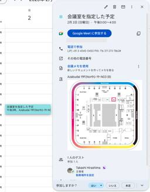

RAKSUL TechBlog
https://techblog.raksul.com/
RAKSULグループのエンジニアが技術トピックを発信するブログです
フィード

IntelliJ × Claude Code を快適にする Plugin「prompt-work」を作った話
RAKSUL TechBlog
はじめに こんにちは、ノバセルでサーバーサイドエンジニアをしている者です。 この記事はノバセル テクノ場 出張版2025 Advent Calendar 2025の13日目の記事です。 この記事では、IntelliJ IDE で Claude Code を使う際に Terminal への直接入力が不便だったため、JetBrains IntelliJ 用の Plugin を作成した話を紹介します。 課題 IntelliJ で Claude Code を使って開発する際、以下の課題がありました。 Terminal に日本語を入力しにくい IntelliJ の Terminal で Claude C…
14時間前

決済基盤開発を通して感じるプラットフォーム開発の魅力
RAKSUL TechBlog
こんにちは。ラクスル Advent Calendar 2025 12 日目です。決済基盤開発部でDirectorを務めている安尾(@yusuke_yasuo)が担当します。 この記事では、「プラットフォーム開発の魅力」を、私自身の経験や日々の意思決定の背景を交えながら紹介できればと思います。 全社戦略との強い結びつき まず最初に触れたいのは、決済基盤がラクスルの全社戦略の中で非常に重要な位置づけにあるという点です。 ラクスルはこれまで、印刷・物流・広告といった異なる領域で事業を展開してきましたが、現在は「各事業を横断する共通基盤の強化」を通じて、事業間シナジーを生み出すフェーズに入っています。…
1日前

コードリーディング革命: コードベースの"地図"を作れ
RAKSUL TechBlog
こんにちは。ノバセルの新開です。 この記事はノバセル テクノ場 出張版2025 Advent Calendar 2025の12日目の記事です。 qiita.com はじめに 私の所属するインフラ＋OP改善チームでは、負債解消や定型作業の型化を軸に、自動化を積極的に進めています。 その中で私は、開発フローを 「周辺理解 → 課題発見 → 設計 → 実装」 の 4 フェーズに整理して運用しています。 理解: コードリーディング & コンポーネント理解 現在の設計がどのデザインパターンに分類され開発者の思想が理解できる アーキテクチャ図を作成できる 発見: 自分の中で定めた正解の型との比較 技術書を…
2日前

フレームワークに依存しない UI コンポーネントライブラリを Stencil.js で構築した話
RAKSUL TechBlog
はじめに ラクスルの印刷事業部でエンジニアをしている西元です。 私の所属するチームでは少し前に Canva のデザインを使ってラクスルで印刷する機能 をリリースしました。 同じチームの取り組みとして、すでに公開されている「ラクスルのデザイン制作基盤における技術選定と開発の裏側」という記事がありますので、ぜひご覧ください。 今回はその中でも「フレームワークに依存しない UI コンポーネントライブラリをどう作ったか」をテーマに紹介します。 ラクスルの現状と課題 ラクスルでは複数の EC サイトを展開しており、それぞれが Vue や React といった異なる技術スタックで開発・運用されています。 …
2日前
Agentic Codingと「質とスピードのトレードオフ」の再考
RAKSUL TechBlog
こんにちは。ノバセルの細川です。 この記事はノバセル テクノ場 出張版2025 Advent Calendar 2025の11日目の記事です。 はじめに ソフトウェア開発において「質とスピードはトレードオフである」という考え方は根強く存在します。しかし、この命題は正しいのでしょうか。そして、Agentic Codingの登場によって、この議論はどのように変化するのでしょうか。 質とスピードは本当にトレードオフか 「質とスピードのトレードオフ」は、より正確には「保守性とスピードのトレードオフ」と言い換えることができます。 シニアエンジニアであれば、スピードを維持しながら保守性の高いコードを書くこ…
3日前

リファクタリングをいつすべきか
RAKSUL TechBlog
こんにちは。ラクスル Advent Calendar 2025 10 日目です。MBS開発部でDirectorを務めているkasuya(@n.ile)が担当します。初日に続いて２度目の登場になります。 今回はリファクタリングについて、私が心がけていることをまとめてみました。 リファクタリングとは リファクタリングは、外部から見た振る舞いを変えずに内部構造を改善することです。目的は機能追加やバグ修正ではなく、可読性・保守性・変更容易性の向上です。 プロダクト開発では変更が重なるほどコードは複雑化します。だからこそ、小さく・こまめにリファクタリングする習慣が重要です。本ページでは、特に日常開発での…
3日前
Google ディスプレイ広告を100円/日で運用してみた
RAKSUL TechBlog
この記事はNovasell Advent Calendar 2025の10日目の記事です。 はじめに 普段はバックエンドエンジニア・データエンジニアとして働いています。Web広告配信の仕組みについて解像度を上げたいと思い、実際にGoogle ディスプレイ広告を運用してみることにしました。 自作のLP（ランディングページ）を宣伝してみました。予算は1日100円という超低予算で、クリエイティブの作成から配信、レポート分析まで一通りやってみた体験記です。 宣伝するLP 今回宣伝するのは、老荘思想をテーマにしたLPです。 LP: https://ymdvsymd.github.io/te-lin/b/…
4日前

ちいさくはじめるデザインシステム再構築 〜Figma MCP × 独自MCPの相乗効果〜 2
2
RAKSUL TechBlog
はじめに こんにちは。ラクスル Advent Calendar 2025 9 日目を担当する、ラクスル事業 Web エンジニアの長澤です。 ラクスルには、デザインシステムとして kamii というものがあります。 designsystem.raksul.com しばらくの間、あまりアクティブな開発が行われていない状態だったのですが、今年に入り小さく無理のない範囲から再構築の取り組みを行ってきました。 本記事では、再構築の第一歩となったデザイントークンの取り組みと、その成果物を活用した MCP サーバーの開発について説明します。そして、Figma MCP Server との併用により実現した、デ…
5日前

生成AI で dbt の開発を加速させるための「ガードレール」とTips
RAKSUL TechBlog
この記事はノバセル テクノ場 出張版2025 - Qiita Advent Calendar 2025 - Qiita の 9 日目の記事です。 はじめに こんにちは。ノバセルでデータエンジニアをしている森田です。 弊社では、Cursor や Claude Code などのコーディングアシスタントを用いた開発に全社的に力を入れており、dbt によるデータモデリングを行う私のチームでも積極的に活用しています。 特に直近で開発した dbt project では、その 9割以上のコードを生成AIによって開発しました。 コードの大部分を AI に任せつつ、可読性や品質を失わずに開発を進めるためには、適…
5日前
TanStack Query + Suspenseでデータフェッチを簡潔に行う
RAKSUL TechBlog
はじめに こんにちは。ラクスル株式会社 エンジニアの小谷です。 この記事は ラクスル Advent Calendar 2025 ノバセル テクノ場 出張版2025 Advent Calendar 2025 の 8 日目です。 最近、ReactでSPAを構築する中でTanStack Query v5を導入しました。特に useSuspenseQuery と React の Suspense を組み合わせたデータフェッチが非常に開発者体験が良かったので、その知見を共有したいと思います。 この記事では、バックエンドからのデータ取得方法を3つのアプローチで比較しながら、useSuspenseQuery…
6日前

AIがあれば何でも書ける！今年書いた非プロダクトコードたち
RAKSUL TechBlog
ラクスル印刷事業本部 CTO室の平島です。 もうすぐ年の瀬ですね。 今年を振り返ると、やはりAIによる変化は凄まじいものがありました。 最近は、コーディングのほとんどをAIが担い、人間はその前後の工程に集中する、そんなケースがかなり増えてきました。 これからは、いま人間が行っている作業も、もっとAIに置き換わっていくでしょう。 正直なところ、去年の私はこの変化を悲観していました。 プログラミングの楽しさを奪われ、超効率化に疲弊するのではないか。 「怠惰」「短気」「傲慢」を美徳としてきた私たちは、真逆の「勤勉」「忍耐」「謙虚」なAIに飲み込まれてしまうのではないかと。 しかし蓋を開けてみれば、こ…
6日前
git worktree × claude code で並列開発を実践する
RAKSUL TechBlog
git worktree × AI コーディングアシスタントで並列開発を実践する PRを小さく保ちながら複数機能を同時に進める方法 はじめに こんにちは。ノバセルの戸辺です。 この記事は ノバセル テクノ場 出張版2025 Advent Calendar 2025 の 7 日目です。 Claude Code や Cline などの AI コーディングアシスタントを使った開発の並列化は、すでに多くのエンジニアが実践しています。AI に作業を任せている間に別の作業を進める、複数の Terminal で同時に異なる機能を開発する、といったワークフローは一般的になりつつあります。 Anthropic …
7日前

StepFunctions を CDK + Typescript で構築するサンプル集 feat. JSONata
RAKSUL TechBlog
はじめに こんにちは。ノバセル事業本部の星野です。 この記事は ラクスル Advent Calendar 2025 ノバセル テクノ場 出張版2025 Advent Calendar 2025 の 6 日目です。 最近の業務で、AWS Step Functions によって Web サービスを構築する機会がありました。 Step Functions は AWS の各種サービスをつかったワークフローを構築するためのサービスです。 Lambda, ECS, AWS Batch, Aurora Serverless など様々なサービスの呼び出しをステートマシン形式で定義することができます。 このとき…
9日前
Federated Learning: Training Models Where the Data Lives
RAKSUL TechBlog
こんにちは、ラクスルベトナムTech LeadのMinhです。 本記事はノバセル テクノ場 出張版2025 Advent Calendar 2025の5日目の記事になります。 私は日本語が得意ではないので英語での投稿とさせてください。 1. Introduction: AI Wants More Data, but the World Says “No” Figure 1. High-level federated learning architecture. Adapted from Nasim et al. [1]. Modern deep learning systems—especia…
9日前
PythonとOpenAI Batch APIでの長時間動画の非同期解析処理
RAKSUL TechBlog
こんにちは、ノバセル24新卒エンジニアの秦です。 本記事はノバセル テクノ場 出張版2025 Advent Calendar 2025の4日目の記事になります。 はじめに OpenAIのAPIは、現時点では「動画ファイルそのもの」を直接入力として受け付けるインターフェースを持っていません。そのため、動画の内容をAIで解析したい場合、システム側で「動画を音声と映像フレーム（静止画）に分解し、それぞれをテキストや画像として入力する」という前処理が不可欠になります。 また、動画を解析する場合、動画の長さ自体もボトルネックになります。特に数分〜数十分に及ぶ動画の場合、リアルタイムAPI（同期処理）では…
10日前
MySQL 5.7 → 8.0 移行で直面した空間データの盲点と対策
RAKSUL TechBlog
はじめに こんにちは。ラクスル Advent Calendar 2025 3 日目を担当する、ラクスル事業部 Web エンジニアの森田です。 現在ラクスルでは MySQL 5.7 を Aurora の延長サポート環境で稼働させているため、MySQL 8.0 への移行を検証しています。 その過程で、とあるクエリが MySQL 5.7 では問題なく稼働していたにもかかわらず、8.0 環境下で応答時間が大幅に悪化する事象が発生しました。今回はこの事象から得られた知見を共有します。 事象 私が開発しているエリアマーケティングチームでは、ポスティングや新聞折込といった印刷から配布までワンストップで提供す…
11日前
新卒テクニカルサポートエンジニアから開発職へ。入社約1ヶ月間で変わった5つの当たり前
RAKSUL TechBlog
こんにちは。 2025年11月1日にラクスル株式会社へ入社し、開発エンジニアをしています。 前職では外資系企業にてテクニカルサポートエンジニアとして1年7ヶ月勤務し、お客様の技術的な問題の解決をお手伝いしておりました。 その中で「自分で価値を創る開発職へ」と決意し、現在に至ります。 学生時代、開発インターンに参加経験はあるものの、正社員としては初めての開発職です。この20日間は、毎日新しい壁にぶつかり、戸惑いながらも、エンジニアとしての「あたりまえ」がガラリと変わるのを感じています。 今回は、その20日間で特に「意識が変わった」「重要性を改めて認識した」5つのポイントに絞って、その学びを共有さ…
11日前
AI活用がプロダクト開発チームに浸透した2ヶ月を振り返る
RAKSUL TechBlog
ラクスルの印刷事業でエンジニアリングマネージャーをしている堀です。 直近では、Canvaとラクスルのパートナーシップに伴い、Canvaのデザインデータをそのまま入稿できる機能をチームで開発し、10月末にリリースしました。 本記事では、このプロジェクトを題材に、8月から10月にかけて実践した「プロダクト開発におけるAI活用の登り方」を振り返ります。 想定読者 開発チームでのAI活用の始め方や進め方の具体像がまだ見えていない方 既にAIを活用しており、プラクティスや改善提案の観点で知見を共有いただける方 前提となるCanva連携の開発概要に興味のある方 前提：どんな開発をしていたか ラクスルは、名…
11日前
n8n-mcp & n8n-skillsで始めるn8nワークフロー生成
RAKSUL TechBlog
はじめに ノバセルで PdM をしていた山中です。現在は親会社のラクスルへ出向しており、全社の AI 活用推進を担当しています。ノバセルとラクスルの双方で n8n の社内ホスティング環境が整い、自動化や AI 化は日増しに加速しています。 一方で、n8n の柔軟性はエンジニアリング知識を前提にした設計で支えられています。だからこそ非エンジニアには最初の一歩が重く、導入のハードルが高く映ります。私も非エンジニアメンバーに伴走してワークフロー構築を支援していますが、初期構築の壁を越えるには学習コストがかかり、人力だけで支援体制をスケールさせるのは限界があると感じてきました。 では、n8nのワークフ…
12日前
FLUX 2.0を32GBユニファイドメモリMacBookで使ってみた
RAKSUL TechBlog
こんにちは。ノバセルCTOの磯部です。 この記事はノバセル テクノ場 出張版2025 Advent Calendar 2025の1日目です。ノバセルでは毎週「テクノ場」と呼ばれるLightning Talkを行い、技術的な共有を行っています。今年は「テクノ場」の出張版として、アドベントカレンダーとして社外にも向けて技術的な共有を行います。 さて、皆さん画像生成AIは使っておられますか。ChatGPTやGeminiで画像を生成した経験があるエンジニアの方は多いと思いますが、これらはクローズドなモデルであり、カスタマイズ性やコスト、セキュリティの面で課題となることもあります。 そこで注目されるのが…
13日前
ラクスル入社して１年を振り返る
RAKSUL TechBlog
はじめに ラクスル Advent Calendar 2025 1日目を担当する、MBS開発部でDirectorを務めているkasuya(@n.ile)です。 MBS開発部は、ラクスルの中核事業である印刷ECの開発・運用を担当しています。業務内容の詳細については、先日公開されたインタビュー記事をご覧いただければと思います。本稿では、12月で入社1年を迎えるにあたり、この1年間の取り組みを振り返ります。 年間230億円の印刷ECを支える心臓部 ― MBS開発部が挑む「10年後の再設計」｜ラクスル株式会社 入社1年目のテーマ：「整備」 入社1年目は、組織とプロセスの基盤整備に注力しました。チームが迷…
13日前
マルチフロントエンド環境での統一認証基盤を実現する内部パッケージの設計と実装
RAKSUL TechBlog
はじめまして。エンジニアの小川です。弊社のAIマーケティングチームにてフルスタックで開発を行っています。 本記事では、マルチフロントエンド環境における認証基盤の課題とその解決策として開発した@novasell/auth-kitパッケージの設計思想と実装について詳しく解説します。 はじめに 弊社のAIマーケティングプラットフォームでは顧客ごとの要件や影響範囲を考慮して、機能別に独立したフロントエンドアプリケーションを構築しています。 このようなマルチフロントエンド環境では認証認可の導入において将来的に以下のような課題が見えていました： 認証ロジックの重複実装によるメンテナンスコストの増大 認可設…
2ヶ月前
LLMによるOCR、画像→構造化データをOpenAI APIで実現【Image inputs × Structured Outputs】
RAKSUL TechBlog
こんにちは。 ノバセルにてデータサイエンティストをしています、石川ナディーム(@nadeemishikawa)です。 本記事ではOpenAI APIの「Image inputs対応モデル」と「Structured Outputs」を組み合わせ、1 回の API 呼び出しで「画像 → 指定構造の構造化データ（JSON／Pydantic）」まで完結させる方法を紹介します。 はじめに ビジネスシーンでは、請求書や名刺など、画像形式の非構造化データを扱う機会が、何かと数多く存在しています。今までは、これらの画像からテキスト情報を抽出するためにはOCR（光学的文字認識）が主に用いられてきましたが、いくつ…
6ヶ月前
チーム開発を加速するAI駆動型dbtワークフローの実践
RAKSUL TechBlog
はじめまして。バックエンドエンジニアの渡邉です。普段は、データエンジニアリングチームの一員として、dbtを使った開発ワークフローの自動化や効率化を支援しています。 この度、私たちのチームが実践しているAIと人間が協働する新しい開発スタイルについて、筆を執らせていただくことになりました。 本記事が、皆さんのチームの開発体験を向上させる一助となれば幸いです。 はじめに：なぜAI駆動型ワークフローが必要か データエンジニアリングの現場では、dbtを使ったデータモデリングが主流になってきました。しかし、チーム開発において以下のような課題を感じることはないでしょうか。 新しいモデルを作るたびに、命名規則…
6ヶ月前
データサイエンティストとして求められてきた事
RAKSUL TechBlog
こんにちは。ノバセルでデータサイエンティストをしている石井です。 本記事では、「データサイエンティストとして求められてきた事」という側面に対し、抽象度の高い整理を試みています。 構成は以下の通りです。 はじめに 本論 1.求められてきた事 2.取り組みの実例 施策効果の推定 予算配分の最適化 3.「AIの進化」と「分析者の価値」 おわりに 参考資料 はじめに データサイエンティストと一重に言えても、その解釈は多面的です。 同じ業界であっても各組織で異なる定義を持ち得、ある組織内であっても各個人の対する仕事は異なり得ます。本記事では、「分析対象のドメイン知識」と「定量データ」を駆使して事業成長に…
7ヶ月前
【RubyKaigi 2025】「RuboCop: Modularity and AST Insights」の3つのポイント紹介
RAKSUL TechBlog
こんにちは。ラクスル事業部 Webエンジニアの西元・森田です。 私達は先日開催されたRubyKaigi 2025 に参加してきました。 多くの興味深い発表がありましたが、その中でも特にRuboCop: Modularity and AST Insightsに注目しました。 このブログでは発表の3つのポイント「プラグイン・アドオン・AST」についてまとめて紹介します。 1. RuboCop プラグイン（RuboCop 1.72以降） RuboCopにはデフォルトでさまざまなルールが用意されていますが、標準機能だけでは特定のライブラリに特化したチェックには対応しきれないため、カスタムCopが広く使…
7ヶ月前
リモートMCPサーバーで実現するSlack×AI連携
RAKSUL TechBlog
はじめに こんにちは！ラクスルのコーポレートアプリ開発グループ に所属している高橋です。 最近、AIツールの社内活用を推進する中で、セキュアなアクセストークン管理を実現するSlack MCPサーバーを実装しました。 Model Context Protocol（MCP）は、AIモデルと外部サービスを安全に連携させるための標準規格ですが、既存の実装例には「個人のAPIトークンを環境変数に設定する」など、セキュリティや利便性に課題がありました。 また標準的なHTTPプロトコルを活用し、特定のクラウドサービスに依存しない設計としたため、様々な環境に導入可能です。 この記事では、MCPサーバーの実装ア…
7ヶ月前
RubyKaigi 2025 参加レポート - Ruby で pidfd を利用する
RAKSUL TechBlog
はじめに こんにちは。SRE チームの吉原 哲です。 RubyKaigi 2025 に参加してきました。中でも特別興味のあるセッションがありました。Maciej Mensfeld (@maciejmensfeld) 氏による Bringing Linux pidfd to Ruby です。彼は Karafka の作者で、以前社内の Karafka をアップグレードしたときお世話になった方です。そのときの話はこのブログエントリ (Kafka と Karafka を無事故・無停止でアップグレードした話) をご参照ください。今回 RubyKaigi へ参加するにあたって是非ともお話を聞きたいと思って…
8ヶ月前
RubyKaigi 2025 参加レポート
RAKSUL TechBlog
RubyKaigi 2025 参加レポート 私と RubyKaigi 行き先は愛媛・松山！スケジュールと移動 初日のスケジュール 最終日のスケジュール 移動の所感 パッキング術 - 2泊3日の持ち物 RubyKaigi遠征の持ち物と事前準備メモ 必要なかったもの、持っていかずに正解だったもの あって良かったもの、持っていけば良かったもの 宿選びのポイント 事前準備のチェックリスト カンファレンス以外の楽しみ方 参加してみての感想 次回参加する方へのアドバイス おわりに RubyKaigi 2025 参加レポート RubyKaigi 2025 こんにちは！Enterpriseチームの土田です。 …
8ヶ月前
【RubyKaigi2025予習ブログ】Rubyのパーサーを基礎から学ぶ
RAKSUL TechBlog
こんにちは！ラクスル事業本部でサーバーサイドエンジニアをしている久冨(@tomi_t0mmy)です。 今年もRubyKaigiがやってきますね！あの熱気をまた感じられるのかと思うととてもワクワクします。 私は昨年、新卒1年目でRubyKaigiに初参加しました。 techblog.raksul.com 初心者にも温かく接してくださるRubyistの皆さんのおかげでとても楽しい3日間だったのですが、昨年の私の感想としては…… 「楽しいけど、セッションの内容は全然理解できない（泣）」 でした。 セッションの内容を理解できなくても楽しめたけど、理解できたらもっと楽しいはず……！！！ ということで、今…
8ヶ月前